Visualización de Datos
Estadística Básica
Pontificia Universidad Javeriana Cali
2023
Una gráfica o una representación gráfica o un gráfico, es un tipo de representación de datos, generalmente cuantitativos, mediante recursos visuales (líneas, vectores, superficies o símbolos), para que se manifieste visualmente la relación matemática o correlación estadística que guardan entre sí.
Elegir el gráfico adecuado es muy importante pues existen diferentes alternativos y se debe escoger el apropiado para representar los datos. El tipo de dato determina el tipo de grafico asi:
| Tipo de variable | Escala | Gráfico |
|---|---|---|
| Cualitativas | ||
| Nominal | torta | |
| Ordinal | barras | |
| likert | ||
| Cuantitativas | Intervalo-razón | diagrama de tallos y hojas |
| histograma | ||
| diagrama de cajas | ||
| diagrama de densidad | ||
| diagrama de puntos | ||
| diagrama de lineas | ||
| diagrama de radar | ||
| mapa de calor |
Variables cualitativas nominales
Diagrama de tortas
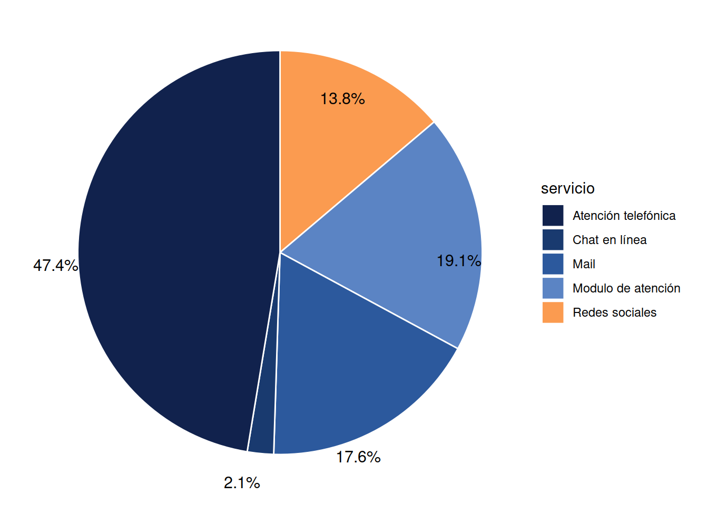
El gráfico de torta o circular es útil al representar una variable en escala nominal, en este caso el tipo de servicio empleado para reportar una queja a la empresa. Rápidamente se puede observar que la gran parte de las quejas son reportadas por medio del servicio de atención telefónica con un valor cercano a la mitad de los reportes (47.4%), mientras que la menos utilizada corresponde al chat en línea.
Variables cualitativas ordinales
Diagrama de barras
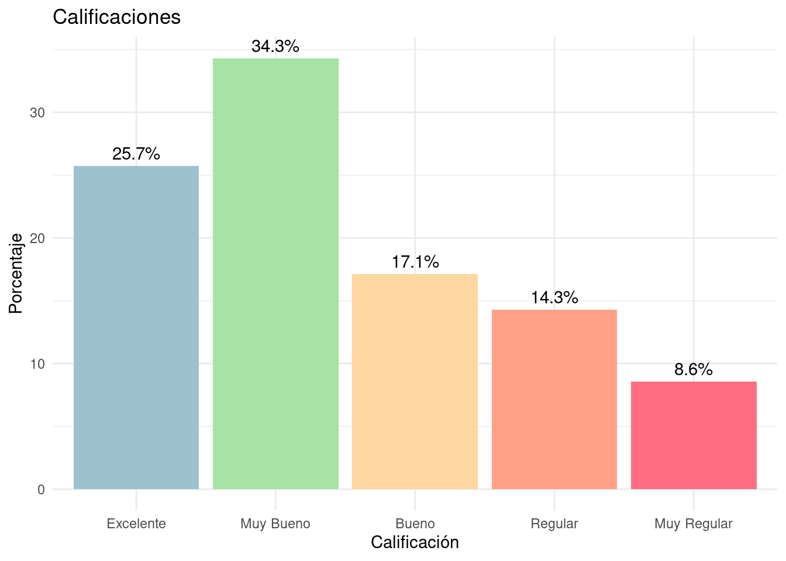
Cuando la variables es de tipo cualitativa en escala ordinal, el diagrama de barras es el apropiado para su prepresentación. Claramente las barras se encuentra en orden de acuerdo con los niveles establecidos en la variable.
La grafica corresponde a la evaluación realizada a un grupo de personas que pueden ser clientes de una entidad financiera calificando el servicio prestado. El color de las barras ayuda a interpresta que los colores rojos, maranjas y amarillo corresponde a calificaciones bajas, mientras que los colores verdes y azules a niveles deseables.
Diagrama de likert
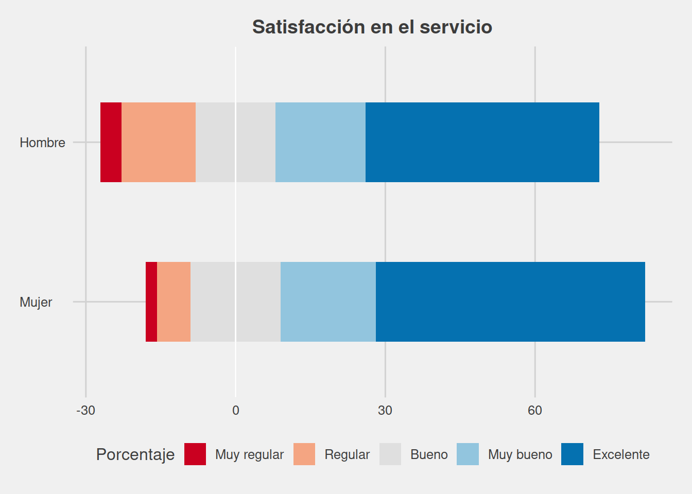
Este gráfico permite visualizar las tendencias en las respuesta de una variable en escala ordinal, por lo general se requiere de una escala de números opciones impares (3,5,7). En este caso se cuenta de las opciones : Muy regular, Regular, Bueno (que obra como opción neutral), Muy bieno y Excelente.
Se puede ver que aunque ambos sexos califican en un gran porcentaje el servicio como Muy bueno y Excelente, los hombre manifiestan una mayor proporción de evaliaciónes Excelentes.
Variables cuantitavas de intervalo
Diagrama de radar
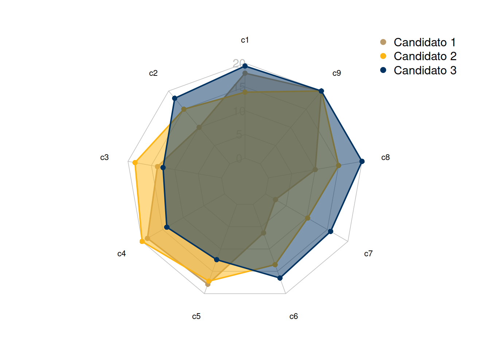

El gráfico de radar permite representar una misma figura varias variables. En este caso representa los puntajes obtenidos por tres candidatos a ocupar una vacanta a los que se les ha realizado un test para evaluar el nivel en nueve competencias deseables para el cargo
Supongamos que se evalua :
- c1 Liderazgo
- c2 Comunicación
- c3 Toma de decisiones
- c4 Gestión del tiempo
- c5 Resolución de problemas
- c6 Habilidades de planificación y organización
- c7 Desarrollo de equipos
- c8 Adaptabilidad
- c9 Empatía
Variables cualitativas de razón
Diagrama de tallos y hojas
The decimal point is 1 digit(s) to the right of the |
2 |
3 | 0223333444
3 | 5556677888899999
4 | 0111222222234
4 | 55555667788999
5 | 0001111122222233333334444
5 | 55555566666777777777888999999
6 | 000000001111111111222233334444
6 | 555555556667777888888888889999
7 | 0011111222222233444444
7 | 6789
8 | 234
8 | 588
9 | 2Este diagrama presenta los datos de manera ordenada, de tal forma que el dígito del dato que se repite mucho constituye el tallo y las hojas corresponde la segunda parte. Por emplo el primer dato es 30 y se representa en dos partes 3|0 , el segundo como 3|2 que represnta el 32, de manera similar hasta el último dato representado como 9|2 que corresponde a una persona de 92 años que corresponde al máximo.
Es útil para revisar los datos de manera rápida y tener una idea de la forma de los datos
Diagrama de puntos
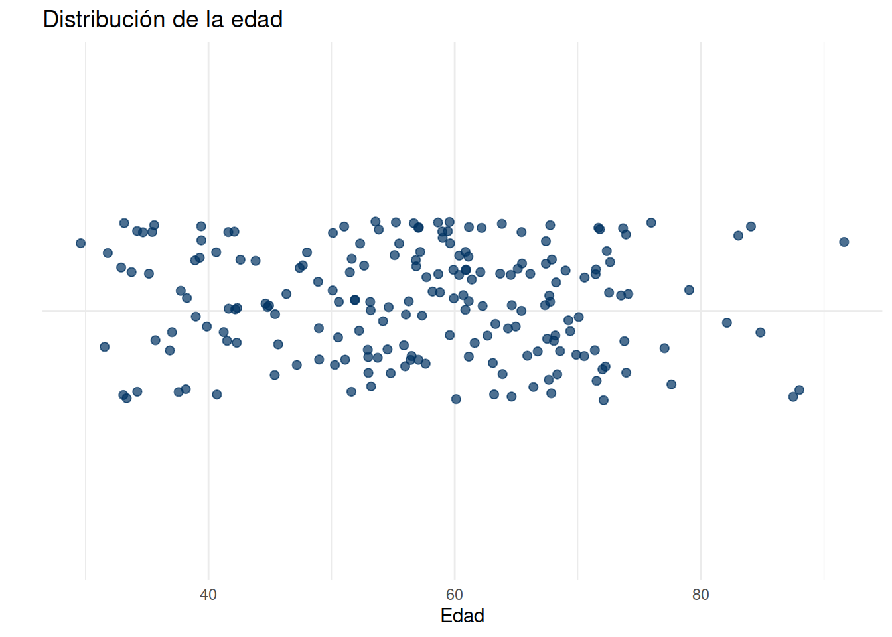
El diagrama de puntos en una sola dimensión permite visualizar la dispersión de los datos, en que parte estan más concentrados y en donde no.
En caso de dos variables cuantitativas se puede visualizar la relación que puede existir o no entre las dos variables
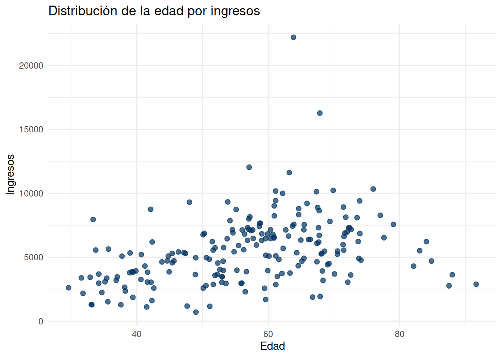
En este caso se visualiza una relación creciente entre la edad y los ingresos hasta los 80 años, edad a partir de la cual se denota una relación decreciente. Tambien se puede observar un dato atípico.
Histograma
El histograma representa la densidad de los datos en intervalos continuos, mediante rectangulos que se hace grandes cuando en el intervalo se presenta una mayor frecuencia de datos
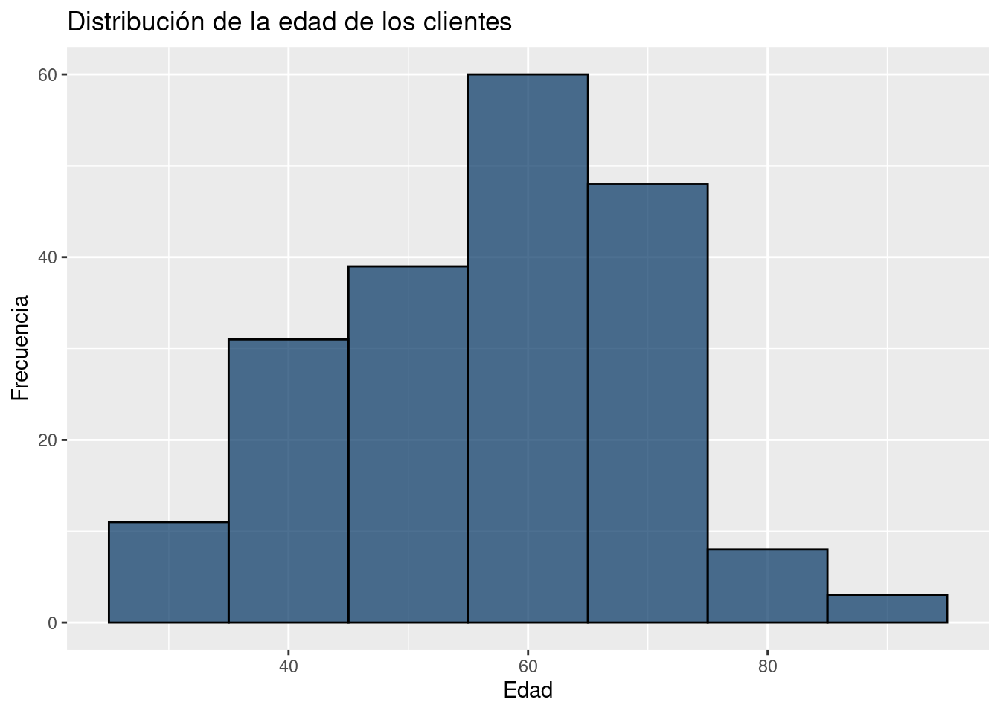
Diagrama de cajas y bigores
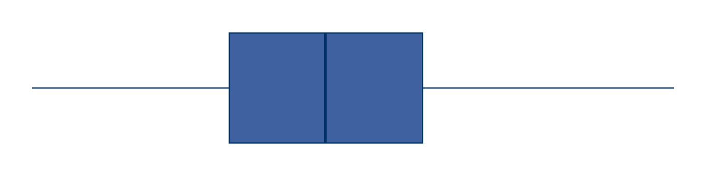
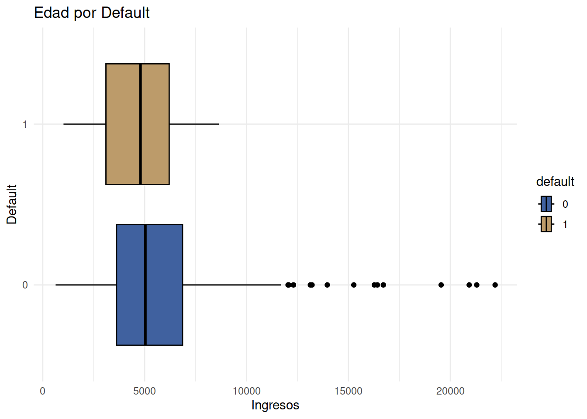
Los diagramas de cajas que represntan los ingresos de los clientes por que han inclumplido el pago y los que no lo han hecho. Sin embargo se notan datos atípicos en los clientes cumplidos
Diagrama de densidad
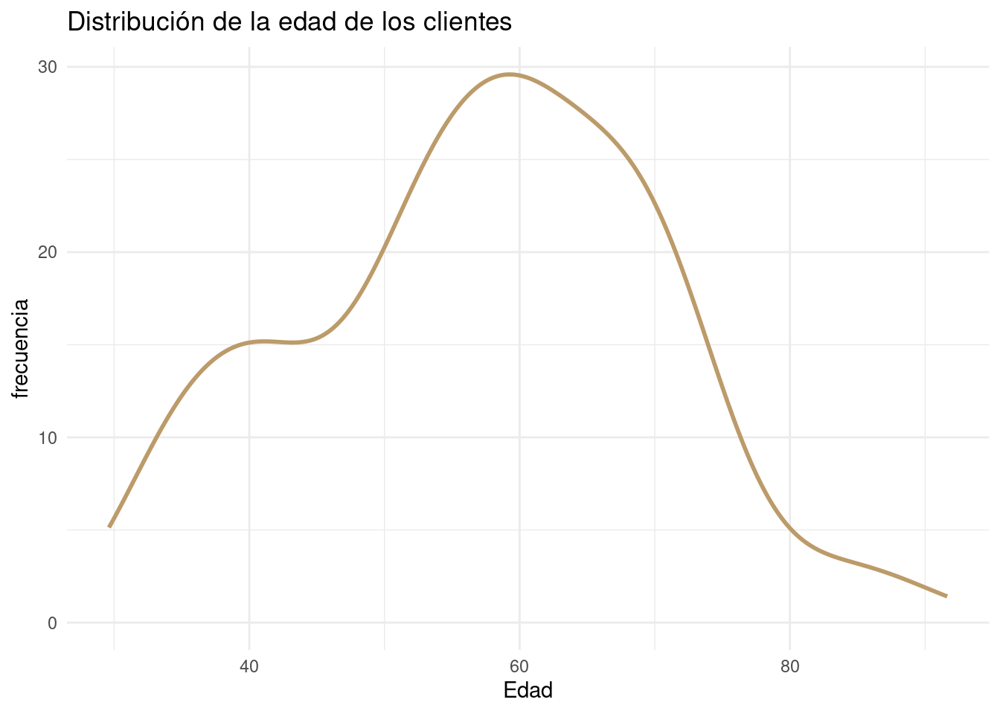
Este diagrma permite visualizar la forma de los datos. En este caso la edad de los clientes se centra al rededor de los 60 años.
Diagrama de lineas
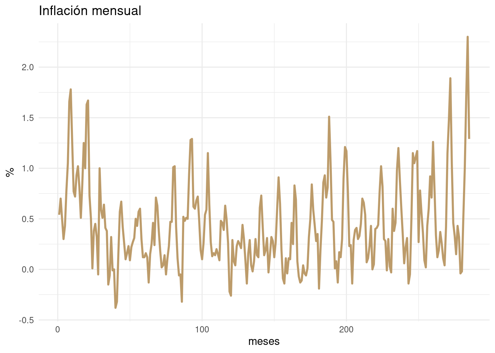
Este tipo de gráfico visualiza los cambios registrados en el tiempo de una variables. En este caso representa la inflació mensual de los últimos 12 años.